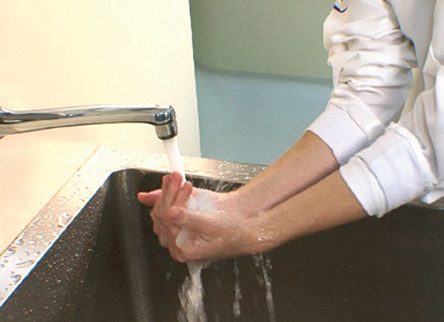

A higienização das mãos é prática fundamental para a prevenção da transmissão de doenças, especialmente no trabalho em laboratórios de análises.
Sobre esse assunto, considere as seguintes afirmações:
I – Uma das funções da higienização das mãos é prevenir infecções cruzadas.
II – A utilização de sabão germicida é indicada, preferencialmente.
III – A secagem das mãos deve ser feita, preferencialmente, com papel toalha ou secador elétrico, evitando toalha de tecido.
IV – A higiene deve ser feita, preferencialmente, com álcool líquido ou, alternativamente com água e sabão.
V – No caso de utilização de luvas, a higienização das mãos é necessária.
Estão corretas, apenas, as afirmações:

Fonte: manual do curso